{kind=link}

Prima di cominciare con una spiegazione approfondita di Scribus, potrebbe essere utile “farsi un’idea” di come Scribus funziona. A questo scopo mostreremo come può essere creata la copertina di un immaginario catalogo per una mostra su Rembrandt. Per seguire la descrizione che daremo, questo è ciò che vi serve:
Questo è il risultato a cui vogliamo giungere:
|
Prima di cominciare, è necessario scegliere la raccolta di colori adatta per il progetto. Assicuratevi che nessun documento sia aperto, e andate in Modifica > Colori. La raccolta di colori predefinita è la “Scribus Basic”, come potete vedere nella finestra di dialogo. Quella che ci serve ora è invece la “X11”. Potete selezionarla in Raccolta colori nella finestra di dialogo Colori:
| 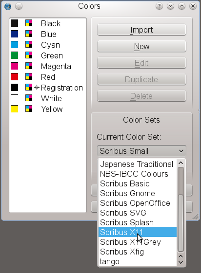 | 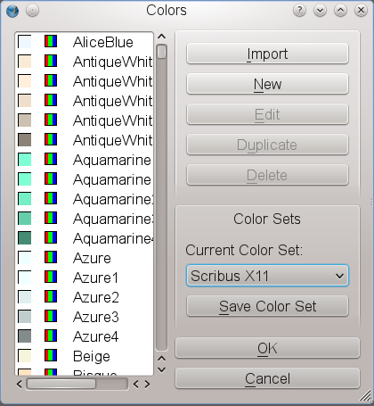 |
Probabilmente sapete cosa accade se create un nuovo file in un elaboratore di testo: il programma crea una nuova pagina, e potete iniziare a digitare. Se è necessaria una nuova pagina, il programma la crea automaticamente. Questo non accade in Scribus (e nemmeno nella maggior parte delle altre applicazioni di desktop publishing). Per creare una nuova pagina, dovete dire esplicitamente al programma di farlo; lo scopo principale di un programma DTP è quello di darvi il massimo controllo sull’impostazione grafica e sul contenuto del documento. Quindi selezioniamo File > Nuovo, e Scribus mostra la seguente finestra di dialogo:
| 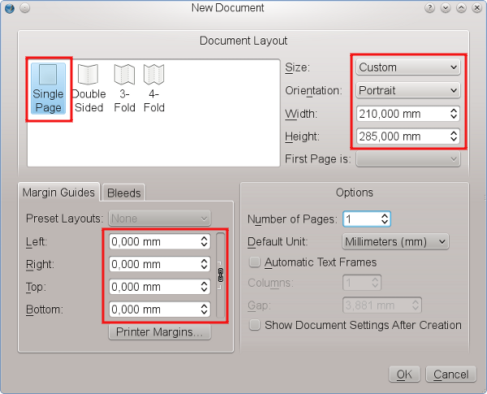 |
Per la nostra copertina scegliamo il layout Pagina singola. Impostate le dimensioni della pagina a “Personalizzato” (si trova in fondo all’elenco nel menù a discesa Dimensione) e modificate il valore dell’Altezza a 285 mm. La copertina non ha bisogno di margini, quindi impostiamo a 0 mm il valore per tutti i margini. Lasciate così come sono tutte le altre impostazioni predefinite.
Dopo aver premuto il pulsante “OK”, Scribus crea una nuova pagina:
 |
Poi, ci serve uno sfondo grigio per la pagina. Fate clic sul rettangolo bianco (o grigio chiaro) nella barra dei menù, oppure premete S sulla tastiera. Sì, state leggendo bene: premere il tasto S non farà comparire una lettera o un testo sulla pagina. Per inserire del testo è necessario un apposito ambiente, detto cornice di testo, come vedrete in seguito. Ma in questo caso ci serve una forma, quindi diamo il comando S da tastiera.
Il puntatore del mouse diventa un rettangolo con un + sull’angolo superiore sinistro. Fate clic e tenete premuto il pulsante del mouse, trascinate il + attraverso la pagina e lasciate andare: avete appena creato una forma. Dimensioni, posizione e colore non hanno importanza, perché li cambieremo subito.
| 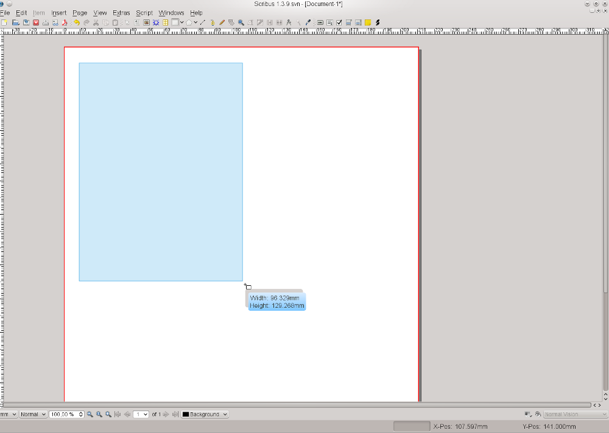 |
Se non avete fatto clic in qualche altro punto sullo schermo, il nuovo rettangolo è ancora selezionato, il che significa che è evidenziato in puntini rossi e ha delle “maniglie” in ciascun angolo e a metà dei lati. Ora selezionate Finestre > Proprietà o premete F2 per aprire il pannello Proprietà, che è, per così dire, il “coltellino svizzero” di Scribus; in seguito imparerete molto altro su di esso. Per ora restiamo nella scheda predefinita di questo strumento, che è chiamata “X,Y,Z”. Più un documento è complesso, più è utile dare un nome unico a ciascun oggetto: renderà più facile trovarlo e selezionarlo in seguito. Non vi sorprenderà, ma diamo alla nostra forma il nome di “Sfondo”.
Poi facciamo in modo che il rettangolo abbia le stesse dimensioni della pagina. Ricordate i valori che abbiamo scelto prima per la pagina? Inseriteli qui, ma prima non dimenticate di fare clic sul simbolo di catena a destra delle caselle in cui si impostano i valori di larghezza e altezza. Se non deselezionate la catena, vedrete che una modifica a uno dei valori provocherà un cambiamento proporzionale anche nell’altro: vi sembrerà di essere bloccati, ed è proprio così finché non deselezionate la catena.
Ora che il nostro rettangolo ha esattamente le stesse dimensioni della pagina, dovete fare in modo che coincida con i bordi della pagina impostando le sue posizioni X e Y a 0,000; se cancellate i valori e inserite 0, e poi premete Tab o Invio, Scribus aggiunge automaticamente la virgola e gli zeri successivi.
| 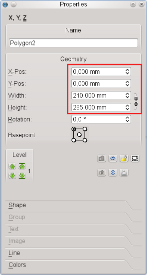 |
Suggerimento: avete visto come farlo manualmente, ma nella versione 1.4.x esiste un modo rapido per creare una cornice che riempia tutto lo spazio fino ai margini della pagina. Dopo aver premuto S per attivare l’icona delle forme, tenete premuto il tasto Maiusc e fate clic in un punto qualunque sulla pagina: subito compare una cornice grande quanto i margini; nel nostro caso sarà grande quanto l’intera pagina poiché abbiamo impostato i margini a 0.
Per impostazione predefinita, Scribus usa “Nessuno” come colore di riempimento per le forme, che non è ciò che ci serve. Con la nostra forma ancora selezionata, usiamo il pannello Proprietà per assegnarle nuovi colori. A questo scopo selezioniamo la scheda “Colori”. Nell’elenco selezionate “Grey41” come colore di riempimento.
Ogni forma e ogni cornice in in Scribus ha un bordo. Per le forme il colore predefinito è il nero. Poiché non vogliamo che il bordo della nostra cornice abbia un colore, fate clic sul simbolo con il pennello e selezionate il colore “Nessuno”, che è sempre il primo dell’elenco.
| 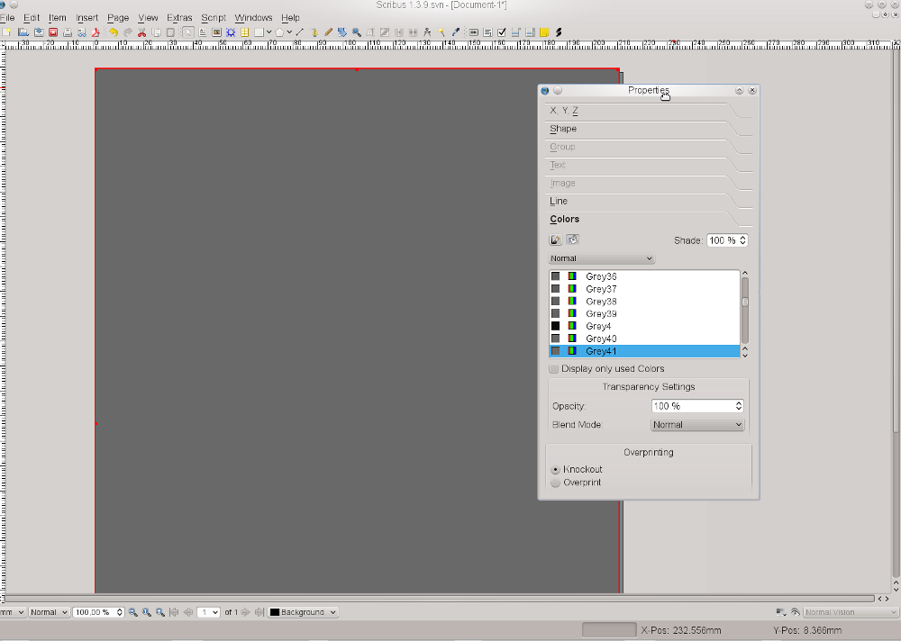 |
Lo sfondo della pagina è completo. Per assicurarvi che non ci siano cambiamenti non intenzionali, tornate alla scheda “X,Y,Z” del pannello Proprietà e fate clic sul simbolo “lucchetto”: in questo modo lo sfondo sarà protetto da modifiche.
| 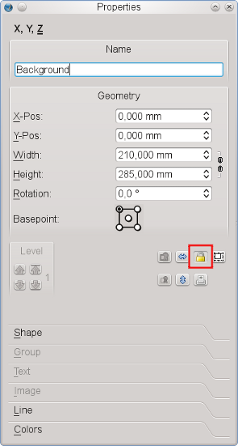 |
Ora che lo sfondo è stato creato, bisogna inserire l’immagine di copertina. Forse siete abituati a inserire direttamente le immagini quando usate un elaboratore di testo, ma in Scribus esse sono inserite in un apposito contenitore (detto cornice). Per le immagini, o, più precisamente, per le immagini bitmap, create una cornice immagine facendo clic sull’icona “Inserisci cornice immagine” nella barra degli strumenti, oppure premendo I sulla tastiera. Tracciate la cornice immagine nello stesso modo visto prima per il rettangolo, e, come prima, andate alla scheda “X,Y,Z” del pannello Proprietà.
Date a questa cornice immagine il nome “Rembrandt1”, e per larghezza e altezza inserite i valori come mostrato nello screenshot qui sotto. La nostra immagine deve essere posizionata esattamente in basso a destra nella pagina. Come si può fare? A dire il vero, è piuttosto facile. Conosciamo le coordinate X e Y della pagina, e cioè 210 mm e 285 mm. Quindi potete inserire questi valori nelle caselle “Pos X” e “Pos Y” ma aspettate! prima di farlo, modificate il punto base dell’oggetto. Quando avete inserito i valori 0,000 per la forma sullo sfondo, i valori erano per la parte superiore sinistra della pagina. Ma l’immagine deve essere allineata ai margini inferiore e destro, quindi modifichiamo il punto base a inferiore destro prima di inserire i valori X e Y. Inoltre, rendiamo fisse le misure della cornice immagine bloccandola:
| 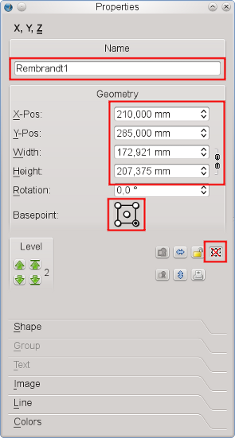 |
Per rendere la nostra copertina un po’ più elegante, aggiungiamo una copia modificata dell’immagine. Sarà quasi del tutto nascosta: si vedrà solo una piccola striscia sulla sinistra. Usiamo Elemento > Duplicazione multipla per quest’operazione, perché ci permette di dare valori precisi per lo spostamento orizzontale e verticale. Ci serve una sola copia, e in “Distanza orizzontale” inserite -6 mm, in modo che la copia sia collocata a sinistra dell’immagine di copertina:
| 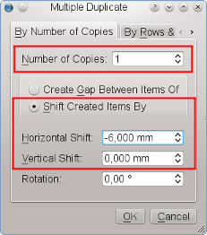 |
Poiché la nuova cornice immagine è una copia di “Rembrandt1”, non c’è bisogno di cambiarne le dimensioni, e la sua posizione è stata determinata dall’operazione di copia. Assegnatele il nome “Rembrandt2”. Ma ora c’è un altro problema: la nuova cornice immagine si trova sopra la cornice per l’immagine di copertina. La soluzione consiste nello spostarla dietro di essa. Finora sono stati creati tre oggetti, e ciascun nuovo oggetto è stato collocato sopra i precedenti; quindi spostiamo la copia a una quota inferiore, cioè sotto “Rembrandt1”:
| 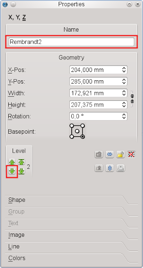 |
Ora il nostro lavoro si fa un po’ più serio, e dobbiamo inserire nel nostro documento del materiale dall’esterno di Scribus. Per caricare l’immagine di copertina in “Rembrandt1”, fate clic col tasto destro sulla cornice e poi su “Carica immagine”:
| 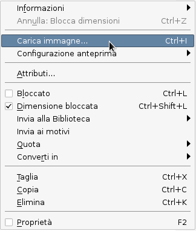 |
Si apre una finestra di dialogo da cui caricare il file, ma, come di solito accade per le mostre, c’è un gran numero di immagini con nomi molto simili, tutte nella stessa directory. Come possiamo identificare il file giusto? Houston, abbiamo un problema! E invece no. Fortunatamente, Scribus fornisce un’anteprima nella finestra di dialogo per le immagini:
 |
Ora che abbiamo identificato la giusta versione del file, fate clic sul pulsante “OK” oppure semplicemente doppio clic; ma cosa succede??
| 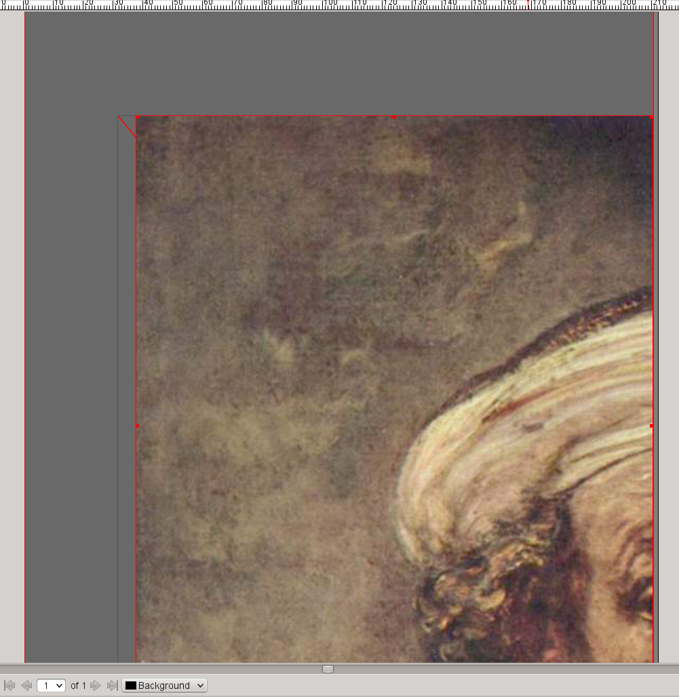 |
Sembra ovvio che le misure dell’immagine e le misure della cornice immagine non siano gemelli identici, ma fortunatamente il pannello Proprietà ci viene in soccorso e le obbliga a comportarsi come se lo fossero. Nella scheda “Immagine” contrassegnate le opzioni “Adatta alla cornice” e “Proporzionale” e la nostra immagine di copertina sarà perfettamente posizionata:
| 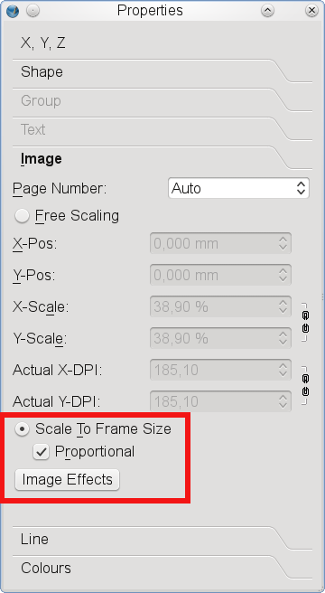 |
La prossima cosa che ci serve è una copia del contenuto di “Rembrandt1” in “Rembrandt2”. Fate clic col tasto destro su “Rembrandt1” e poi su “Contenuto > Copia”. Poi fate clic col tasto destro sulla striscia visibile di “Rembrandt2” e poi su “Contenuto > Incolla”. Il risultato è tutt’altro che spettacolare, quindi bisognerà eseguire qualche magia su “Rembrandt2”. Usate di nuovo il pulsante destro del mouse per aprire il menù contestuale, questa volta per visualizzare la finestra di dialogo “Effetti immagine”:
| 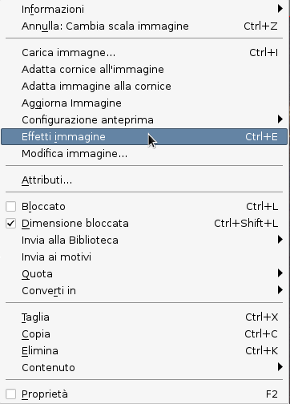 |
Nella finestra di dialogo “Effetti immagine”, mettiamocela tutta e applichiamo all’immagine quattro diversi effetti: inverti, sfocatura (raggio: 7,0), scala di grigi, e luminosità (da impostare a -44):
| 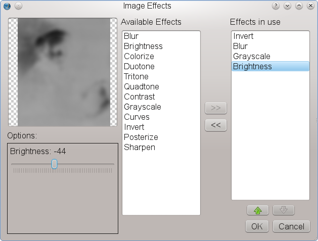 |
Ora l’aspetto è molto migliore, non è vero?
 |
Ed ora diciamo al nostro pubblico chi è l’eroe raffigurato nell’immagine. A questo scopo, create una cornice di testo facendo clic sull’icona Inserisci cornice di testo nella barra degli strumenti o premendo il tasto T; ormai avrete capito come funziona. Potete creare la cornice trascinando il puntatore del mouse, proprio come avete fatto prima per la forma rettangolare. Dovrebbe essere abbastanza grande da contenere il testo, come mostrato sotto. Poi fate doppio clic sulla cornice di testo e digitate REMBRANDT. Poi fate clic in qualche altro punto dello schermo e selezionate di nuovo la cornice di testo facendo clic (una sola volta) su di essa.
Aprite il pannello Proprietà (F2) e andate nella scheda “Testo”. Nel menù di scelta del tipo di carattere scegliete “Gentium”, impostate le dimensioni del carattere a 97 pt e il colore del testo a “Bianco” per il nome di Rembrandt. Il risultato dovrebbe essere simile al seguente:
| 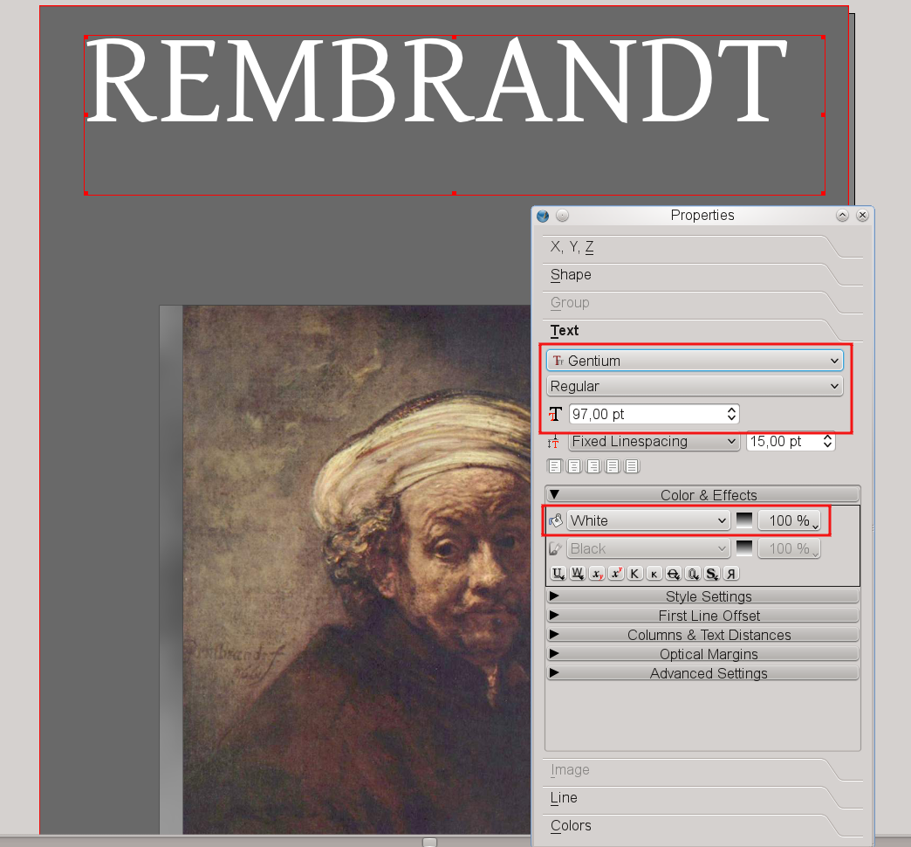 |
Fino a questo punto la nostra copertina sembra a posto, ma è un po’ noiosa. È ora di aggiungere qualche dettaglio più raffinato. I fatti storici sono dalla nostra parte quando cerchiamo di raggiungere il nostro obiettivo: Rembrandt era il nome (certamente non comune) del nostro uomo, mentre il suo cognome era “van Rijn”. Quindi create un’altra cornice di testo, fate doppio clic e digitate VAN RIJN. Scegliete lo stesso tipo di carattere e la stessa dimensione che avete usato prima, ma invece del bianco usate il colore “Pink2”. “Che cosa?” dite voi, “Rosa? Rembrandt vi prenderebbe immediatamente a schioppettate!” Di sicuro lo farebbe, se non avesse visto ciò che abbiamo intenzione di fare, e infatti non abbiamo ancora finito. Passate alla scheda “Colori” e impostate “Tonalità” a 50% e “Opacità” a 20%. È meglio ora? Ve l’avevamo detto, e persino Rembrandt apprezza il risultato: potete quasi vederlo sorridere.
| 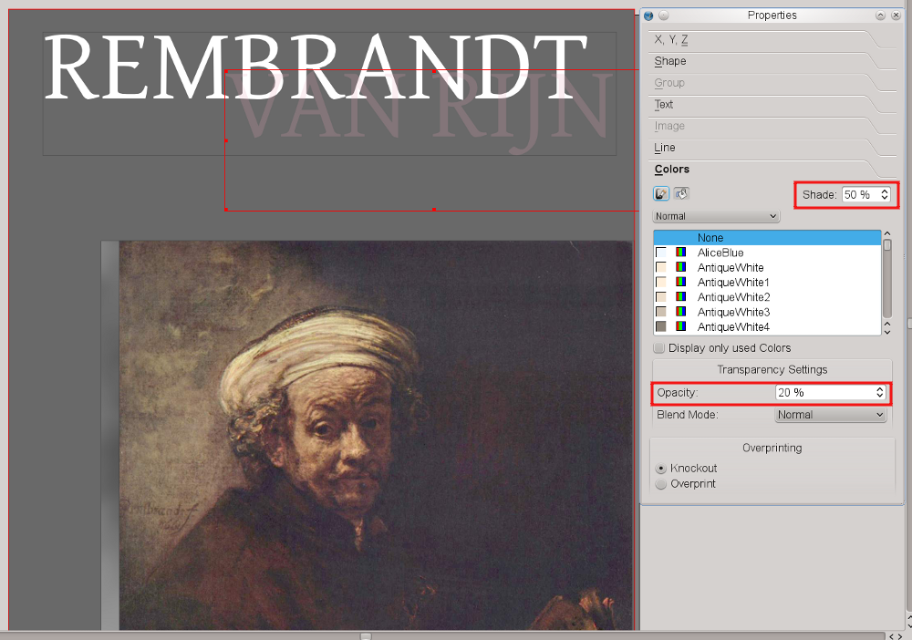 |
Infine, spostate la cornice “Van Rijn” una quota più bassa, dietro la cornice “Rembrandt”:
Ora aggiungete altre tre cornici di testo e inserite i testi “1606”, “2006” e “Painting the Dutch Golden Century”. Usate il carattere Gentium per tutte le cornici di testo; ai numeri date la dimensione di 53 pt e al testo di 31 pt. Selezionate dei colori per il testo che somiglino a quelli che vedete su schermo; dopo ciò che avete imparato finora, dovrebbe già essere facile. Qui vediamo un suggerimento per un buon design: notate l’aspetto piacevole che otteniamo usando lo stesso tipo di carattere per tutti gli elementi, anche se con colori e dimensioni diverse.
 |
Per rifinire il titolo, tracciate una linea retta facendo clic sull’icona “Inserisci linea” sulla barra degli strumenti e trascinando col mouse. Trascinate il mouse da sinistra a destra tenendo premuto il tasto Ctrl per far sì che la linea sia orizzontale. Poi aprite il pannello Proprietà e spostatevi nella scheda “Linea”. Qui potete sperimentare con lo Spessore Linea, poi spostatevi nella scheda “Colori”, aprite l’elenco dei colori per la linea (icona con il pennello) e scegliete “WhiteSmoke”.
Per finire, spostate la linea a metà tra le cornici di testo “1606” e “2006” .
Le operazioni conclusive consistono nell’aggiungere un editore immaginario e il suo logo. Con uno sfoggio di modestia, chiameremo il nostro editore “Scribus Publishing”. Così non dovremo scervellarci per inventare un logo, ma potremo usare quello di Scribus. Potete trovarlo nella cartella ~/share/scribus/icons, dove ~ è la directory in cui Scribus è installato sul vostro computer. Il file si chiama scribus.png.
Ora create una piccola cornice immagine in fondo alla pagina, tra il bordo e le immagini di copertina. Assicuratevi che il colore di riempimento di questa cornice sia impostato a “Nessuno”, perché vi importeremo un’immagine con sfondo trasparente. Poi, come abbiamo fatto con la prima immagine, importiamo l’icona con clic sul tasto destro > Carica immagine. Per evitare che i colori dell’icona interferiscano con i colori che abbiamo scelto per la pagina, aprite la finestra di dialogo Effetti Immagine come spiegato al passo 2. Trasformate l’immagine in “Scala di grigi” e aumentate il contrasto: in questo modo il logo resterà ben visibile, e allo stesso tempo non contrasterà con i colori scelti prima.
| 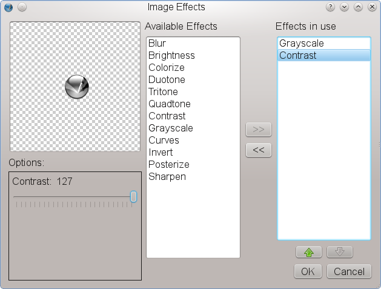 |
Per aggiungere il nome dell’editore, create una cornice di testo in un punto qualunque della pagina, chiamatela “ScribusPublishing” nella scheda “X,Y,Z” del pannello Proprietà e inseritevi il testo “Scribus Publishing”. Scegliete “Bitstream Vera Sans” come tipo di carattere, impostate la dimensione a 13 pt e il colore a “Grey97”.
Infine, ruotate la cornice di testo di 90 gradi. Il posto giusto per farlo è la scheda “X,Y,Z” del pannello Proprietà: basta cambiare il valore della “Rotazione” a 90:
| 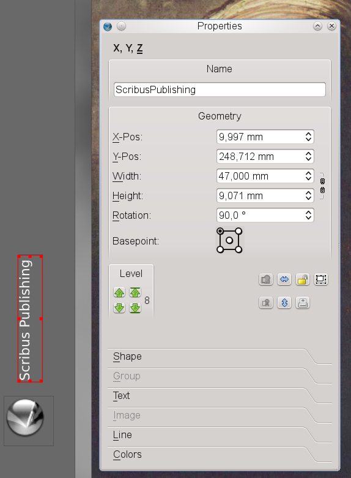 |
Ora usate il mouse per spostare la cornice di testo ruotata in una posizione al di sopra del logo di Scribus. Ora fate clic su File > Salva, inserite “Rembrandt-tp” come nome del file e fate clic su “OK”. Voilà! Avete appena creato il vostro primo documento in Scribus. Non è stato così difficile, vero?
|